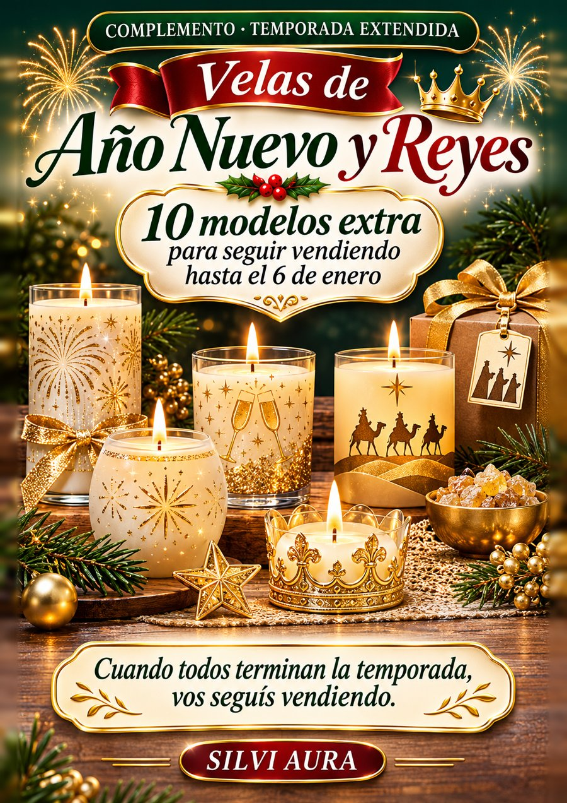
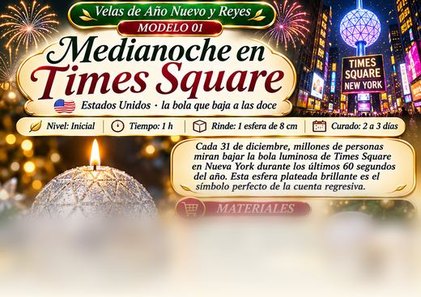
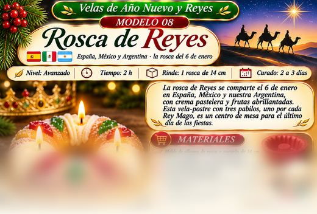

MODELO 01
Medianoche en Times Square
Estados Unidos · la bola que baja a las doce
Inicial
10 modelos de velas de Año Nuevo y Reyes, inspirados en tradiciones del mundo, con materiales exactos, paso a paso con fotos y precio orientativo de venta.

Mientras la mayoría de las emprendedoras guarda todo después de Navidad, la gente sigue buscando regalos para recibir el Año Nuevo y para el Día de Reyes. Con estos 10 modelos estirás tu temporada hasta el 6 de enero, con velas que nadie más tiene en la feria.
Una vuelta al mundo de fin de año: 4 de nivel inicial, 3 intermedios y 3 avanzados.


Vista previa: los materiales y el paso a paso completos están en la guía.Una guía digital en PDF de 12 páginas con los 10 modelos, el calendario sugerido y una página completa por cada vela. Te llega al email apenas se confirma el pago.
Este complemento sigue el mismo formato y las mismas técnicas base (contenedor, molde, cera batida y capas) y remite a sus capítulos de fundamentos y seguridad. Si ya hacés velas, lo podés usar directo; si recién empezás, te conviene tener también la guía principal.
Sí: cada modelo te dice a qué público ofrecerlo, cómo presentarlo como regalo y en qué rango de precio moverte. Arrancá por los modelos de nivel inicial.
El pago se hace por Hotmart, con los medios disponibles en tu país (tarjeta, Mercado Pago en Argentina, PayPal y otros).
10 velas con historia para vender cuando las demás ya cerraron.